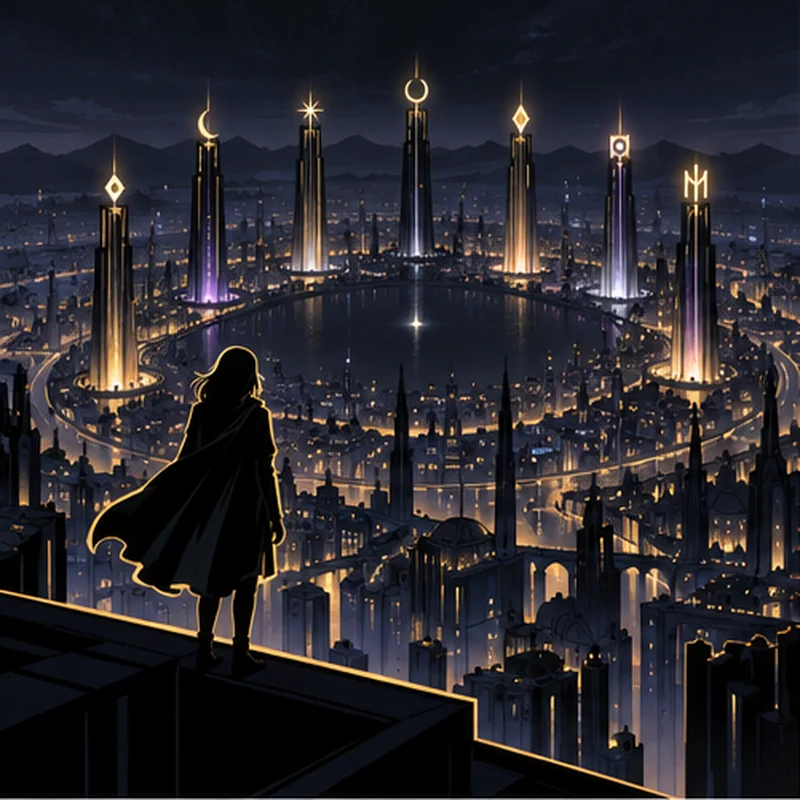
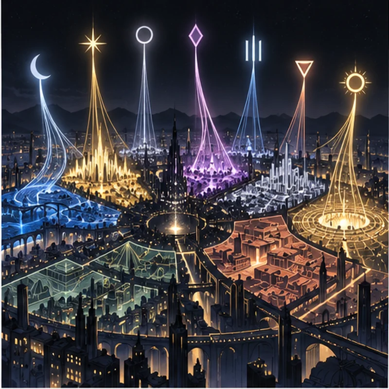
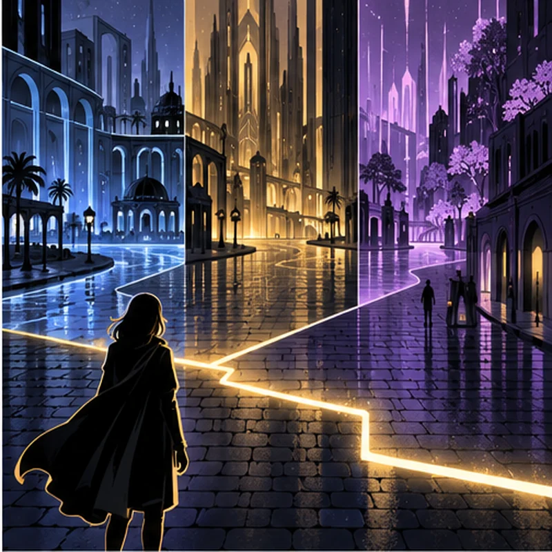
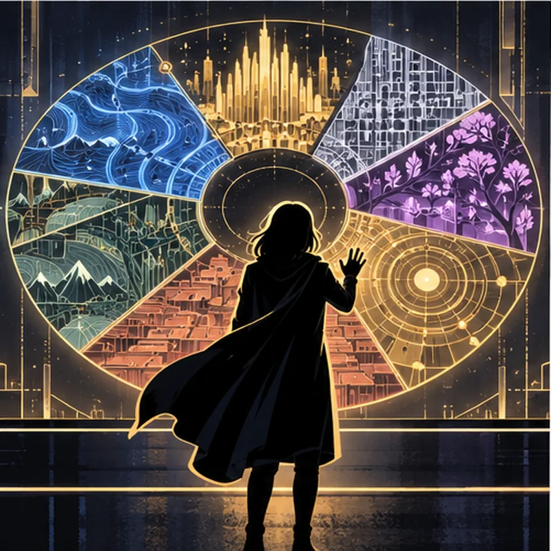
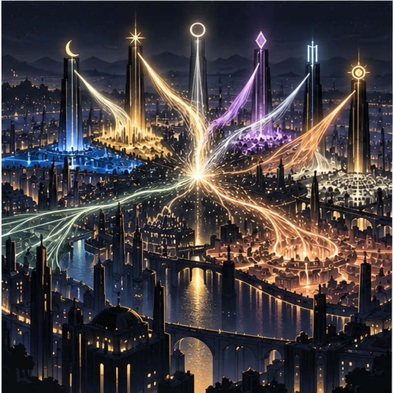
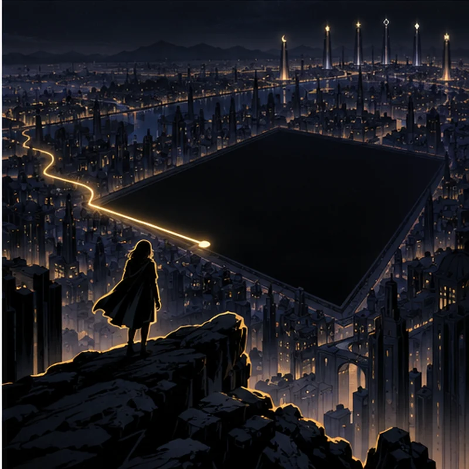

The seven towers did not keep the same time.
MaraSo who built the city?
A graphic novel serial · Episode 2
To rule a district is not necessarily to have made it.
Fiction note: This speculative story draws on distinct traditions without treating them as one doctrine. Its dialogue and events are invented; its cosmological language is a fictional device.

The seven towers did not keep the same time.
MaraSo who built the city?

The MeasureI established the eastern reach.
The KeeperYou were assigned the east.
The MirrorA boundary is not a birthplace.

A line of gold crossed the street. The pavement shifted beneath it.
MaraWho drew the line?
The VoiceThe Architect.
MaraWho gave the Architect authority?
For the first time, the towers fell silent.

The city unfolded as a map: seven territories around one bright center.
MaraYou were given names, then rooms, then laws.
The MeasureWe made the rooms.
The KeeperWe keep them.

The MeasureMy district.
The MirrorYou are pulling the center apart.
The VoiceThere was never a center.
MaraThen why does the city tremble when you fight?

At the edge of the map, Mara found a place without a name.
SystemUNASSIGNED AREA.
The VoiceNothing is outside the map.
MaraThen why doesn’t the map know what this is?